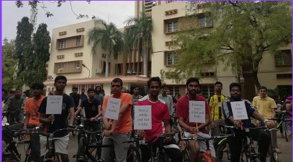
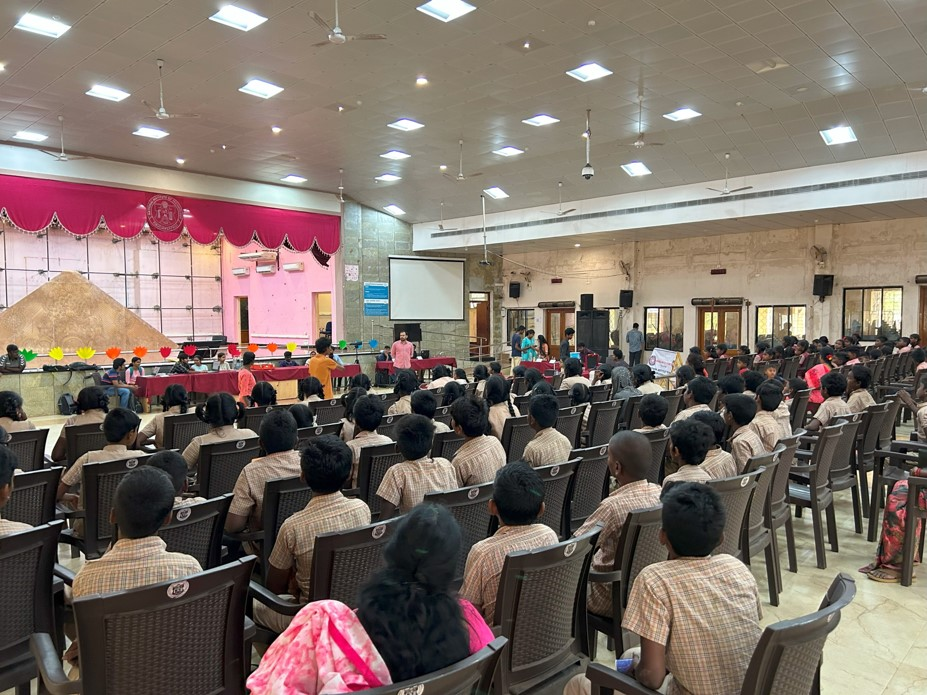
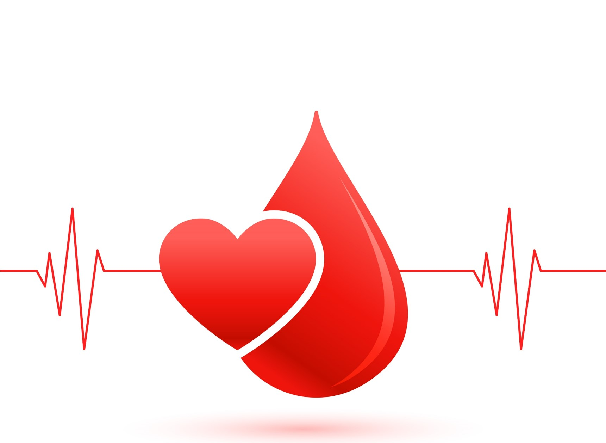
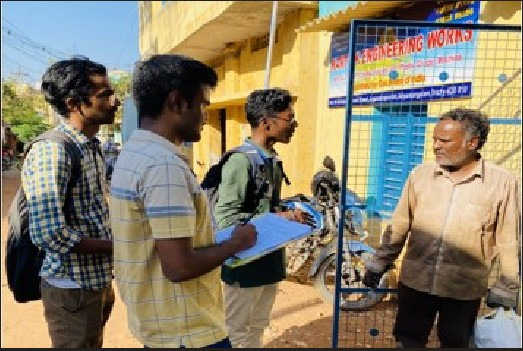
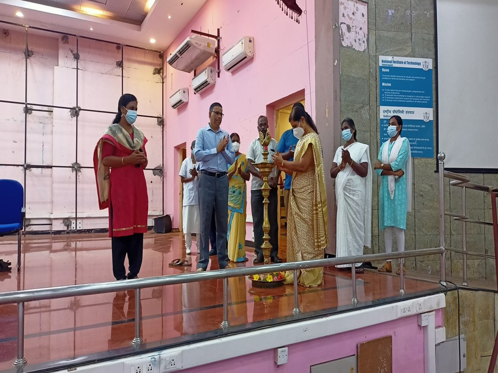
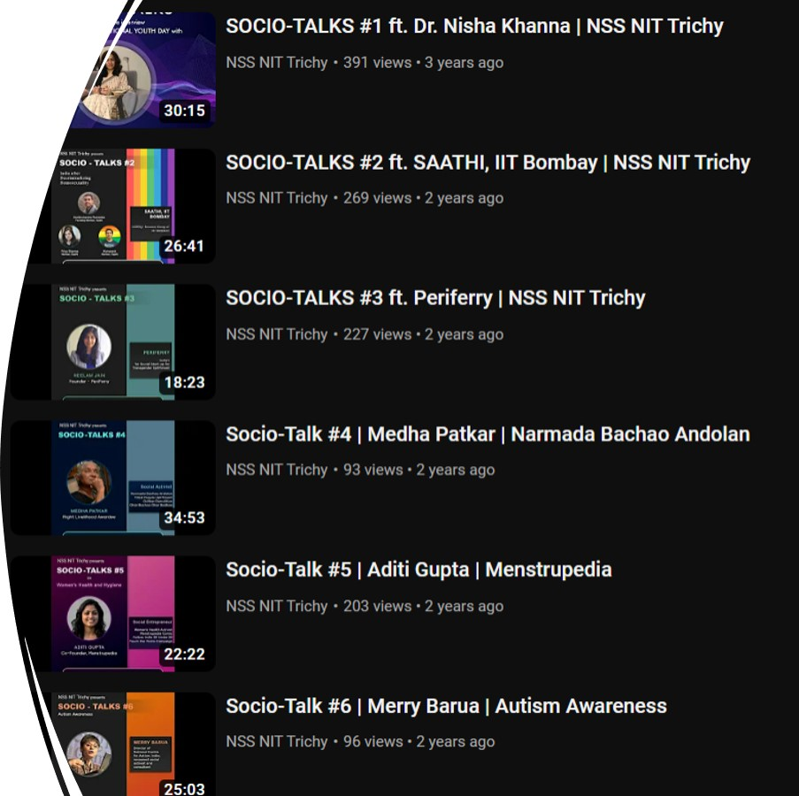
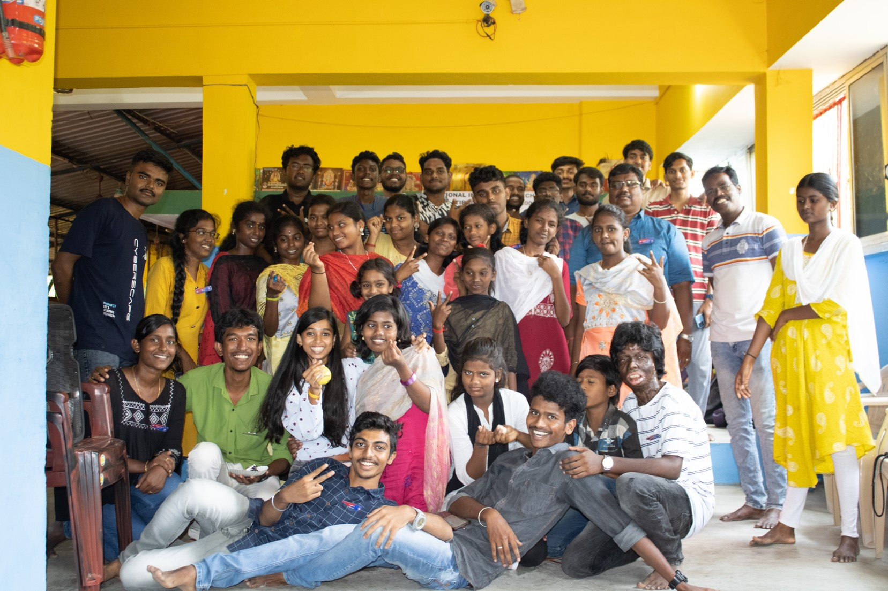
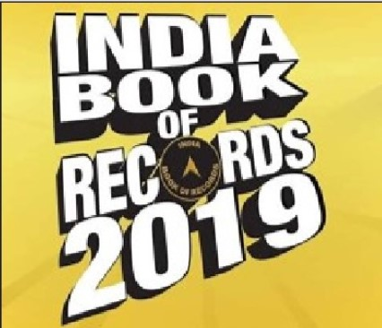
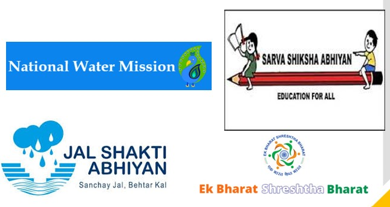

NSS NIT Trichy
NSS NIT Trichy
CYCLOTHON:
In line with the Fit India Movement, 300 dedicated volunteers participated in a campus cyclothon to advocate for fitness and a healthy life. This event underscored the significance of regular exercise, emphasizing its positive impact on overall well-being. Additionally, it highlighted the environmental benefits of cycling, aligning with sustainable practices. Our aim is to inspire a fitness-conscious generation, fostering a healthier and happier community in accordance with the Fit India Movement's vision..

SCIENCE DAY EXHIBITION:
As part of the Science Day celebration, we organize an enlightening exhibition where school students are exposed to various science projects. This initiative aims to not only showcase the fascinating world of science but also educate and emphasize the importance of science in our daily lives. By engaging young minds and encouraging their curiosity, we aspire to inspire and cultivate a new generation of innovators and critical thinkers, fostering a deep appreciation for science and its limitless potential.

BLOOD DONATION CAMP:
We orchestrated a vital Blood Donation Camp at the NITT Hospital, promoting altruism and creating awareness regarding the profound benefits of blood donation. Our objective was to facilitate a platform for individuals to contribute to this noble cause, potentially saving lives in critical situations. By spreading awareness and encouraging active participation, we aim to highlight the significance of voluntary blood donation. This event served as a crucial step towards building a compassionate society, united in the spirit of giving and upholding the values of humanity. Join us in making a lifesaving difference through this invaluable act of generosity.

SURVEY:
In our commitment to conducting an official census, we meticulously carried out a comprehensive survey in the surrounding villages. The survey encompassed two pivotal aspects: Water Survey and Unemployment Survey. Our goal was to gather precise and essential data to aid in informed decision-making and policy formulation. The Water Survey focused on assessing water availability, quality, and infrastructure, crucial for improving living standards. Simultaneously, the Unemployment Survey shed light on the employment scenario, identifying opportunities for sustainable growth and development. Through this rigorous survey, we aim to contribute to the betterment of these communities by addressing their specific needs effectively.

EYE CHECK UP CAMP:
In a collaborative effort between Joseph Eye Hospital and Opticals and NSS NIT Trichy, an impactful eye checkup camp was organized. The primary objectives were to facilitate the diagnosis of various eye ailments, provide essential remedies to patients, and raise awareness about the noble cause of eye donation. This initiative underscored our commitment to promoting proactive eye care within the community. By providing accessible healthcare services and advocating for eye donation, we aimed to enhance the overall vision health of individuals and foster a society where sight is cherished and protected.

NSS SOCIO-TALKS:
NSS NIT Trichy proudly presents NSS Socio-Talks, a pioneering initiative aimed at fostering awareness among students about crucial social issues. Through insightful conversations led by distinguished experts in respective fields, we aim to enlighten and educate our audience on diverse social aspects. These interviews, hosted on platforms like YouTube and Instagram, provide an accessible and engaging medium to disseminate knowledge. By leveraging the expertise of these accomplished individuals, NSS Socio-Talks strives to inspire informed discussions, critical thinking, and proactive engagement in shaping a better and more socially conscious society. Join us in this enlightening journey of knowledge and understanding.

SCHOOL VISIT:
As an integral facet of the Sarva Shiksha Abhiyan Scheme, NSS Volunteers from NIT Trichy enthusiastically partake in educational activities. This includes regular teaching sessions for the children of REC Middle School situated within the NIT-T campus. The objective of this engagement is to contribute to the mission of inclusive and quality education for all. By providing academic support and mentorship to these young learners, we strive to enhance their educational experience and foster a culture of knowledge sharing. Through this collaborative effort, we aspire to shape a brighter future for the students and contribute to the larger goal of accessible education.

INDIA BOOK OF RECORDS:
In a momentous event encompassing more than 50 schools in the Trichy District and its environs, NSS volunteers took a proactive step by delivering enlightening speeches on the perils of hazardous plastic waste to students. This educational endeavor was aimed at raising awareness about the detrimental impacts of plastic on our environment and encouraging sustainable practices. The significance of this event was duly recognized and documented in the esteemed India Book of Records, acknowledging the collective efforts of NSS volunteers in advocating for a greener and healthier planet. We take immense pride in this recognition, further fueling our commitment to environmental advocacy and social responsibility.
